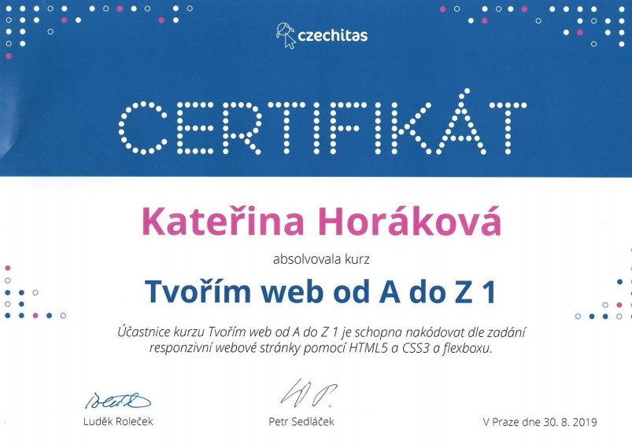
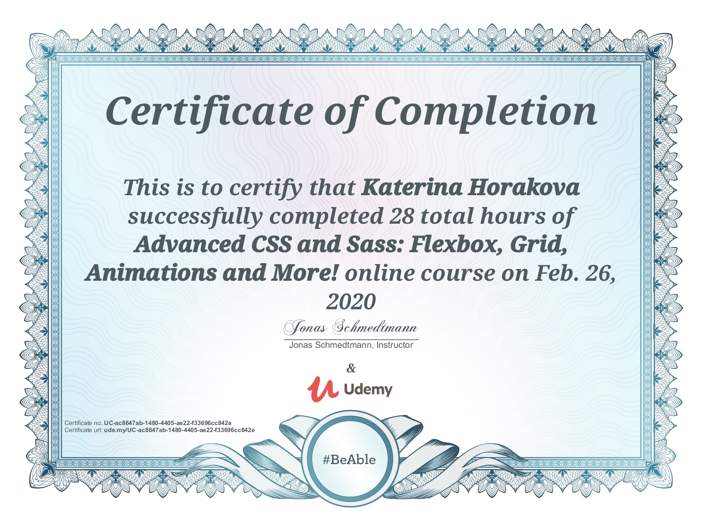
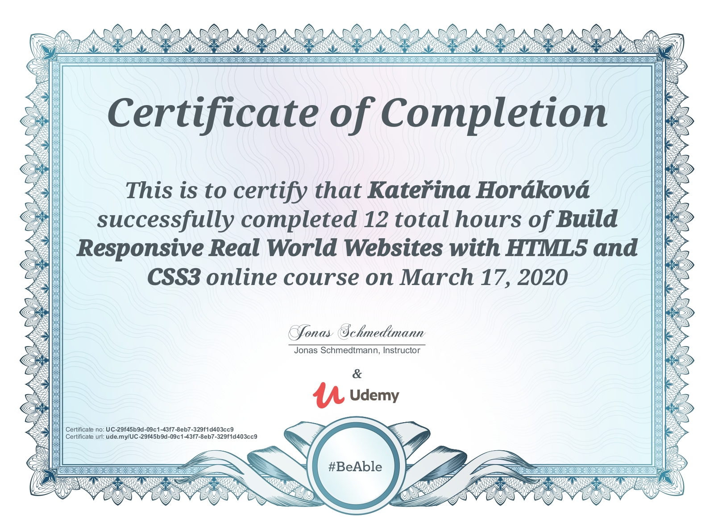
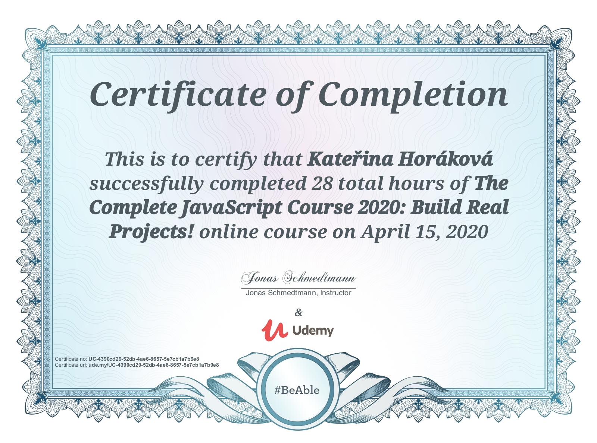
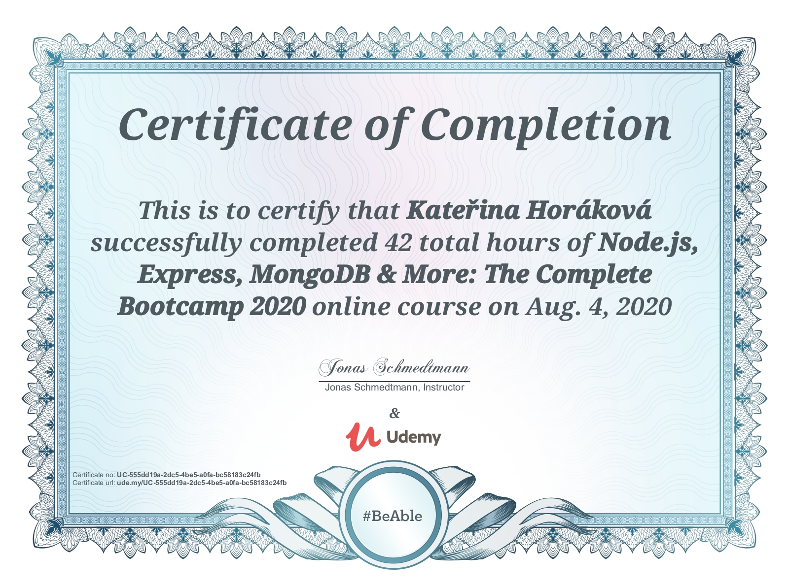

O mně
Zdravím příchozí a vítejte na stránce mého CV, jsem holka z Orlických hor, co už nějaký ten pátek osidluje stověžatou Prahu, v níž jsem získala i první větší pracovní zkušenosti. Po prvních brigádách (práce v pekárně, fundraising pro Greenpeace, telemarketing a catering) přišla i první opravdová výzva - nabídka práce pro restauraci Žofín Garden, patřící v té době do skupiny Zátiší Group. Zde jsem se z pozice brigádníka stala brzy sehraným členem týmu s odpovědností za úsek studené kuchyně a cukrárny a následným vedením menšího týmu brigádníků. Během té doby jsem při práci i úspěšně dokončila studium gymnázia.
...Po maturitě jsem přijala pracovní nabídku financovanou z programu EU určenou pro absolventy a nastoupila na pozici referenta Úřadu práce pro Prahu 9. Zde jsem získala první zkušenosti v administrativě, digitalizaci, archivaci. Dále k mým pracovním povinnostem patřila i komunikace s exekutory ohledně klientů oddělení zaměstnanosti, popř. exekuční srážky z dávky podpory v nezaměstnanosti. Po roce jsem přijala nabídku připojit se k oddělení hmotné nouze, kde jsem kromě administrativy poskytovala i sociální poradenství a pomáhala tak řešit sociální problémy klientů ÚP pro Prahu 9. Díky reorganizaci jsem si vyzkoušela i práci na oddělení pro osoby se zdravotním postižením a vydávání ZTP průkazů. Po sjednocení dvou pracovišť jsem se následně vrátila na oddělení hmotné nouze.
Bohužel mi zanedlouho na to onemocněla maminka a potřebovala častější péči. Po delším přemýšlení a zvažování všech pro a proti jsem se nakonec rozhodla přijmout nabídku mého partnera, který mě již nějakou dobu přesvědčoval, ať nechám „úřad úřadem“ (zejména kvůli častým výhrůžkám ze strany klientů, např. po nepřiznání dávky), věnuji čas a potřebnou péči blízkým a mezitím si najdu nový cíl.
A co bylo dál? Přijali mě na VŠCHT v Praze, bohužel jsem záhy zjistila, že zvolený obor nebyl správnou volbou. Kvůli většímu stresu se mi zhoršilo astma, chronická rýma i pylové alergie. Z tohoto důvodu jsem zoufale hledala obor, u kterého zakotvím na delší dobu (a kde nebude vadit mé neustálé smrkání a pokašlávání…). Dala jsem tedy na radu dobrého přítele a mrkla se po nějakém IT oboru. Přihlásila jsem se do kurzu pythonu u Pyladies, kam mě přijali jako náhradníka. Byla to sice moje první zkušenost, ale přece jenom zkušenost, na které se dalo stavět. Následně jsem navštívila několik kurzu u Czechitas (Tvořím web od A do Z - 1, Bootstrap, Javascript, Canva). Zhlédla několik kurzu na Udemy, kde mi vyloženě „sedly“ kurzy od Jonase Schmedtmanna a najednou byl svět hned veselejším místem.
Zahrála jsem si i nějaké hry (codecombat, flexbox zombies, flexbox froggy a další), vyzkoušela si první pokusy podle návodu (odkazy níže) a následně se pustila do práce na tomto CV. Vymyslela si projekt, následně několikrát přehodnotila, zažila hromadu AHA momentů i začátečnických chyb. Chvil, kdy mi to fakt šlo i těch, kdy opravdu ne. A nakonec mě hromada neustálého přepisování dovedla k CV, na které můžu být i trochu pyšná.
Současně jsem mohla díky samostudiu strávit poslední roky se svou babičkou, která byla z důvodu věku i zdravotního stavu odkázaná na pomoc a péči blízké rodiny a stále jsem k dispozici invalidní mamince, které občas poskytuji péči. Volný čas jsem trávila objevováním nových zemí, našla si spoustu nových přátel, věnovala se seberozvoji, nachodila hromadu kilometrů, cvičila jógu a dechová cvičení, což postupně vedlo ke zlepšení mých zdravotních obtíží. Projekt se mi zdárně blížil ke konci a přišlo to nejhorší. Sepsání kloudného textu.
Po pravdě, nevím kde budu za pět let, protože i těch pět posledních byl pořádný fičák. A i když mi s každým absolvovaným kurzem roste sebevědomí, mám před sebou ještě dalekou cestu. Musím se ještě hodně učit, zbavit se zlozvyků a otrkat v novém prostředí. Vím, že nejvíce se naučím praxí a v kolektivu to jde nejlépe (hold, sama se vše nenaučím). I když si neumím spoustu věcí si ještě představit, poznala jsem sama na sobě, že s trochou vůle jde cokoli. Pokud tedy dočtete až do konce, budu ráda, když mne kontaktujete.
-kh-
Pracovní zkušenosti
Poskytovatel péče
2017-2021
Kromě samostudia nového oboru, jsem poskytovala péči invalidní matce. Jednalo se například o doprovod na lékařská vyšetření a následnou léčbu, komunikaci s úřady, bankou, vyřizování veškerých nákupů. Následně jsem v posledních 2,5 letech pomáhala strýci s péči o babičku, která zůstala po úrazu odkázaná výhradně na pomoc svých blízkých.
Referent
2014-2016
Poradenství ohledně dávek hmotné nouze a osob se zdravotním postižením, úřední rozhodnutí, sociální šetření, administrativa spojena s výplatou dávek hmotné nouze a agendy pro osoby se zdravotním postižením pro Prahu 18, 19, 20, digitalizace a vydávání TP, ZTP a ZTP/P průkazů. Zakončeno úřednickou zkouškou.
Referent zaměstnanosti
2013-2014
Administrativa, komunikace s exekutorskými úřady, soudy a policií, archivace i digitalizace dokumentů, atd. v oddělení zaměstnanosti pro Úřad práce ČR – kontaktní pracoviště v Praze 9.
Kuchař
2009-2013
Odpovědnost za oddělení studené kuchyně a cukrárny. Práce v týmu i následné vedení malého týmu brigádníků, příprava denního menu, brunchů, catering svateb v prostorech restaurace, galavečerů, párty, kongresů, konferencí a privátních akcí. Restaurace byla součástí skupiny Zátiší Group.
Dovednosti
- HTML5/CSS3
- SASS
- Flexbox
- Grid
- Bootstrap
- JavaScript
- NodeJS
- MongoDB
- MS Office
- Postman
- Npm
- Canva
- Photopea
- a další..
Jazyky
Čeština
Angličtina
Slovenština
Francouzština
kurzy a certifikáty





2020
Node.js, Express, MongoDB & More: The Complete Bootcamp 2020
Jonas Schmedtmann - Udemy
2020
The Complete JavaScript Course 2020: From Zero to Expert!
Jonas Schmedtmann - Udemy
2020
Advanced CSS and Sass Flexbox, Grid, Animations and More!
Jonas Schmedtmann - Udemy
2020
Build Responsive Real World Websites with HTML5 and CSS3
Jonas Schmedtmann - Udemy
2019
Tvořím web od A do Z - 1
Czechitas
2017
Konec prokrastinace
Petr Ludwig - Seduo
2017
Word 2016: Vytvářejte perfektní dokumenty
Seduo
2016
Úřední zkouška
Úřad práce České republiky
2015
Aplikace zákona pro osoby se zdravotním postižením
Úřad práce České republiky
2014
Aplikace zákona dávek hmotné nouze
Úřad práce České republiky
Vzdělání
2008 - 2012
Karlínské gymnázium
humanitní zaměření ukončené maturitní zkouškou
Zájmy
- vzdělávání
- cestování
- fotografie
- knihy
- divadlo
- film
- jóga
- hudba
- a další..